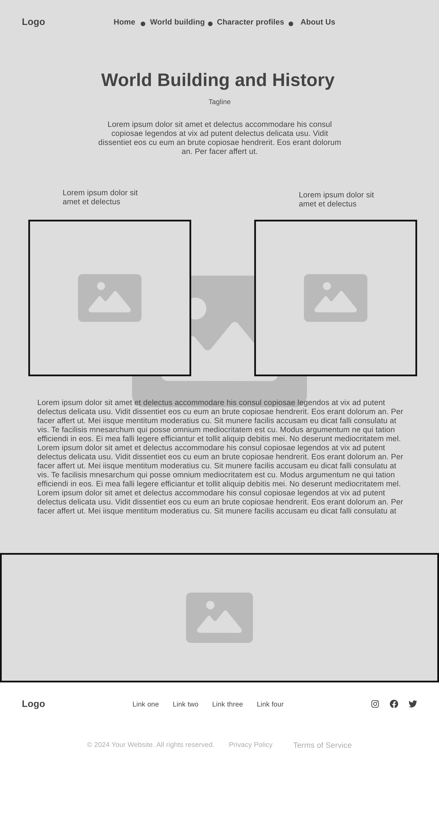

Overview
Purpose
To create a homebase site for my Dungeons and Dragons players to access campaign information, images, and resources.
Audience
My personal D&D group, and any dungeon master/game master interested in learning how to run a campaign.
Branding
Website Logo

Style Guide
Color Palette
| Primary | Secondary | Accent 1 | Accent 2 |
|---|---|---|---|
| #261610 | #593E2E | #A6866A | #D9CCC5 |
Typography
Heading Font: Love Ya Like A Sister, sans-serif
Paragraph Font: Noto Serif, serif
Normal paragraph example
I have chosen two fonts that I feel would work very well with this theme of a website. The heading font is a fun and playful font that I feel would work well with the theme of a D&D campaign. The paragraph font is a serif font that I feel would be easy to read and would work well with the heading font.
Colored paragraph example
I have chosen two fonts that I feel would work very well with this theme of a website. The heading font is a fun and playful font that I feel would work well with the theme of a D&D campaign. The paragraph font is a serif font that I feel would be easy to read and would work well with the heading font.
Navigation
Site Map
Content
Home page
This Dungeons & Dragons website will serve as a central hub for both players and Dungeon Masters (DMs), providing a shared space for immersion, progress tracking, and collaboration. It will integrate a variety of features designed to enhance the overall gaming experience, such as interactive maps, character profiles, world-building elements, and collaborative tools. The website aims to create a seamless environment where players can easily engage with the game world and each other, while DMs have the necessary resources to guide their campaigns effectively. Whether it’s exploring the history of the land, developing their characters, or collaborating with their fellow players, the website will be a vital tool for enhancing their roleplaying adventures.
Images for the Home page


World-Building and History
World-building will be an essential feature of the website, offering a dedicated section for players to dive into the rich history, geography, and lore of the game world. This section will provide the context necessary for players to fully immerse themselves in the campaign and make informed decisions about their characters. A comprehensive campaign setting overview will introduce the world’s major regions, kingdoms, and factions, giving the players a deeper understanding of the political, cultural, and historical landscape in which they operate. Additionally, the website will include a visual timeline, which will allow players to track key events that have shaped the world, such as wars, natural disasters, and the discovery of magical artifacts. players will uncover related quests and stories that tie into their current campaigns. The interactive maps will further enhance this experience by allowing players to explore towns, dungeons, and other important locations in a zoomable format. Each map will provide detailed information about the history, NPCs, and quests associated with each area, enriching the game world’s depth.
Images for the World-Building and History page

Characters Profiles
Character development is central to the Dungeons & Dragons experience, and the website will offer a comprehensive space for players to showcase and deepen their connections to their characters. Each player will be able to view a personalized profile that includes a detailed backstory, personality traits, and motivations, providing a narrative format for them to expand on their character’s history and goals. This profile will not only help players engage with their characters but will also give DMs valuable material for crafting personalized quests and storylines. To further enhance immersion, players will be able to upload a portrait of their character, making each character visually distinct and easily recognizable during gameplay. The website will include sections for tracking essential character stats such as race, class, alignment, skills. As characters level up, players can update these details, allowing both players and DMs to track progress and maintain an organized overview of character development.
Images for the Characters Profiles


Wireframes
Create three wireframes for your site. One for each page and list them here
Home
[Any additional details about home that the wireframe does not make clear]

World-Building and History
[Any additional details about Campaign Details that the wireframe does not make clear]
Characters Profiles
[Any additional details about Characters Profiles that the wireframe does not make clear]